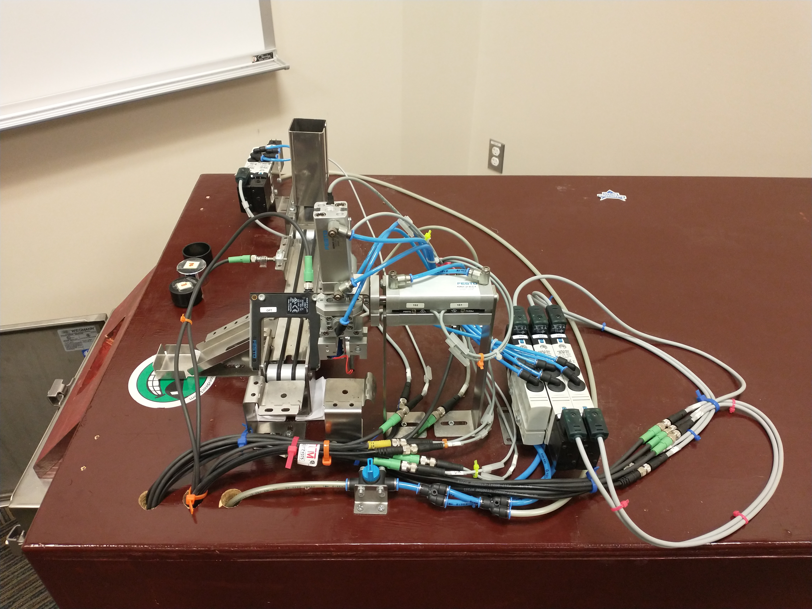
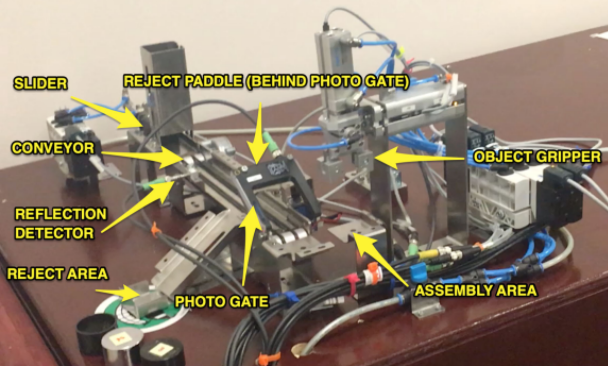

Pick and Place PLC Pneumatic System
This Pick and Place System is operated by a SIEMENS Simatic S7-1214C DC/DC/DC PLC which controls the pneumatic cylinders and conveyor belt that drives the system. The user interacts with the system via the Human Machine Interface (HMI) on the Siemens Trainer, which is also programmed through the Programmable Logic Controller (PLC).


The existing system was taken and all ladder logic was designed, the PLC and HMI were programmed, any problems were debugged, and a final validation of the system process was completed.

The Pick and Place FESTO system is designed to simulate a small-scale manufacturing process for the assembly of a part. To start the system, a physical button is pressed. The slider extends and pushes the part onto the conveyor belt. If the part is not correct, the machine can process a rejection in one of two ways. The first is a metal sensor that detects the reflective surface of the metal component. The second is a manual input via the HMI to press a reject button while the conveyor is running. A rejection paddle will descend and move the part away from the conveyor into a rejection bin in either of these two cases. If there is no rejection, the part will continue through the conveyor. Once the part reaches the photo gate, the sensor will detect the object and the arm will extend forward and down. The end effector will grip the part and the arm will raise it up, lower it onto the collection plate, and release it. The arm then returns to its normal position by raising and retracting.
Technical Highlights- Siemens S7-1214C PLC programming and ladder logic design
- HMI programming and operator interface design
- Pneumatic cylinder sequencing and control
- Dual-mode rejection logic (automatic sensor-based and manual HMI input)
- Multi-step pick and place sequence programming
- System debugging and final process validation
Current Location
North of Atlanta, GAUnited States of America